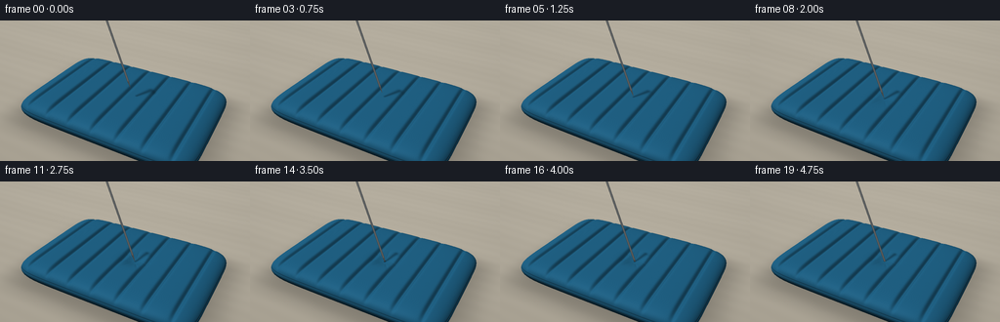
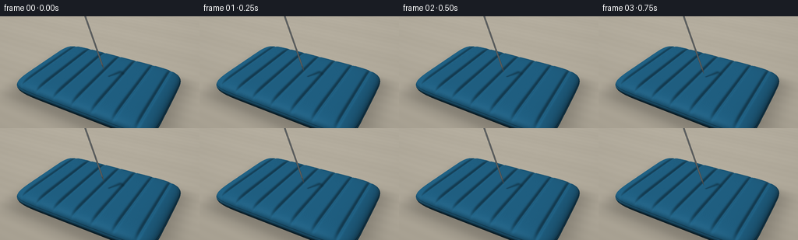

CODING AGENTS AS PIXEL WORLD MODELS
traex/GPT-6.1-Sol · mechanics_0035
点击播放 · 原生 RGB 像素
逐轮保存的候选
回放视频、检查图与代码变化。
每份候选均可单独播放。实际图片检查记录在下方工具轨迹中。
候选 01播放与检查图
点击播放 · 原生 RGB 像素


展开代码变化
--- 上一保存版本
+++ 本次保存版本
@@ -0,0 +1,253 @@
+"""Procedural RGB close-up: a polished needle punctures an inflated fabric mattress.
+Only numpy/Pillow and explicit geometry/lighting are used.
+"""
+import json
+from pathlib import Path
+import numpy as np
+from PIL import Image
+import artifact_io
+
+ROOT=Path(__file__).resolve().parent
+SPEC=json.loads((ROOT/'task_spec.json').read_text())
+S=3
+W,H=SPEC['width']*S,SPEC['height']*S
+rng=np.random.default_rng(12345)
+
+def unit(v):
+ return v/np.maximum(np.linalg.norm(v,axis=-1,keepdims=True),1e-12)
+
+CAM=np.array([4.7,-8.5,6.9])
+LOOK=np.array([0.,0.,.35])
+FW=unit(LOOK-CAM)
+RIGHT=unit(np.cross(FW,[0.,0.,1.]))
+UP=np.cross(RIGHT,FW)
+focal=325*S
+Y,X=np.mgrid[:H,:W]
+D=unit(FW[None,None,:]+((X+.5-W/2)/focal)[...,None]*RIGHT+((H*.565-Y-.5)/focal)[...,None]*UP)
+D=D.reshape(-1,3)
+N=len(D)
+A,B,ZMID,THICK=3.35,2.35,.23,.40
+BASE=np.array([31.,94.,128.])
+LIGHT=unit(np.array([-4.5,-3.,8.]))
+FILL=unit(np.array([4.,2.,4.]))
+DIRECTION=unit(np.array([.38,.01,-1.]))
+CONTACT=np.array([.38,-.05,0.])
+
+# Smooth, inflated rectangle, with parallel welded air chambers.
+def height(x,y,depth=0.,center=None):
+ q=(x/A)**8+(y/B)**8
+ rim=np.sqrt(np.maximum(1-q,0.))
+ # channels run the full mattress length, with a pillowed termination
+ groove=np.zeros_like(x)
+ for gx in [-2.7,-1.8,-.9,0.,.9,1.8,2.7]:
+ groove+=.105*np.exp(-((x-gx)/.077)**2)
+ h=ZMID+THICK*rim-groove*rim*np.exp(-(y/2.18)**12)
+ if depth and center is not None:
+ dx,dy=x-center[0],y-center[1]
+ r2=(dx/.27)**2+(dy/.28)**2
+ h-=depth*np.exp(-r2/2)
+ # Small taut creases radiate from the strained fabric.
+ ang=np.arctan2(dy,dx)
+ h-=depth*.06*(.5+.5*np.cos(ang*7+.6))**8*np.exp(-((np.sqrt(r2)-1.45)/.65)**2)
+ return h,q,ZMID-THICK*rim
+
+CONTACT[2]=height(np.array(CONTACT[0]),np.array(CONTACT[1]))[0]
+
+def project(p):
+ v=np.asarray(p)-CAM
+ z=v@FW
+ return np.stack([W/2+focal*(v@RIGHT)/z,H*.565-focal*(v@UP)/z],axis=-1)/S
+
+# Ray intersection against a bounded analytic surface, precomputed for the static bed.
+lo=np.array([-A,-B,ZMID-THICK])
+hi=np.array([A,B,ZMID+THICK])
+t1=(lo-CAM)/D
+t2=(hi-CAM)/D
+near=np.max(np.minimum(t1,t2),axis=1)
+far=np.min(np.maximum(t1,t2),axis=1)
+valid=(far>np.maximum(near,0))
+ids=np.flatnonzero(valid)
+d=D[ids]
+l=near[ids]; r=far[ids]
+first=np.full(len(ids),np.inf)
+previous=l.copy()
+for s in np.linspace(0,1,101):
+ t=l+(r-l)*s
+ p=CAM+t[:,None]*d
+ h,q,bot=height(p[:,0],p[:,1])
+ inside=(q<=1)&(p[:,2]<=h)&(p[:,2]>=bot)
+ take=inside&~np.isfinite(first)
+ first[take]=t[take]
+ previous[~np.isfinite(first)]=t[~np.isfinite(first)]
+found=np.isfinite(first)
+ids=ids[found]; d=D[ids]
+left=previous[found]; right=first[found]
+for _ in range(16):
+ t=(left+right)/2
+ p=CAM+t[:,None]*d
+ h,q,bot=height(p[:,0],p[:,1])
+ inside=(q<=1)&(p[:,2]<=h)&(p[:,2]>=bot)
+ right=np.where(inside,t,right)
+ left=np.where(inside,left,t)
+static_t=(left+right)/2
+static_p=CAM+static_t[:,None]*d
+static_h,static_q,_=height(static_p[:,0],static_p[:,1])
+is_top=np.abs(static_p[:,2]-static_h)<.004
+
+# Neutral studio/table background: warm defocused grain, no labels or overlays.
+plane_t=(-.195-CAM[2])/D[:,2]
+plane_p=CAM+plane_t[:,None]*D
+floorgrain=np.sin(plane_p[:,1]*11+.3*np.sin(plane_p[:,0]*.8))*.9+np.sin(plane_p[:,1]*2.2)*1.2
+bg=np.zeros((N,3))+np.array([173.,166.,151.])
+shade=9*(1-Y.reshape(-1)/H)+floorgrain
+bg+=shade[:,None]
+# Broad contact shadow grounds the inflated mattress on the table.
+shadow=np.exp(-((plane_p[:,0]/3.7)**8+(plane_p[:,1]/2.7)**8)*.9)
+bg*=1-.27*shadow[:,None]
+# Camera-fixed fine sensor grain.
+noise=rng.normal(0,.3,(N,1))
+
+# Needle intersection with a real tapered steel point and finite round shaft.
+def needle_intersection(orig,dirs,tip,L=3.65,radius=.033):
+ axis=-DIRECTION
+ rel=orig-tip
+ hh=np.sum(rel*axis,axis=-1)
+ dd=dirs@axis
+ wp=rel-hh[...,None]*axis
+ dp=dirs-dd[...,None]*axis
+ aa=np.sum(dp*dp,axis=-1)
+ bb=2*np.sum(wp*dp,axis=-1)
+ cc=np.sum(wp*wp,axis=-1)-radius**2
+ discr=bb*bb-4*aa*cc
+ sq=np.sqrt(np.maximum(discr,0))
+ best=np.full(dirs.shape[0],np.inf)
+ bestnorm=np.zeros_like(dirs)
+ taper=.28
+ for sign in [-1,1]:
+ t=(-bb+sign*sq)/(2*aa+1e-18)
+ h=hh+t*dd
+ ok=(discr>=0)&(t>0)&(h>=taper)&(h<=L)&(t<best)
+ normal=unit(wp+t[:,None]*dp)
+ best=np.where(ok,t,best)
+ bestnorm=np.where(ok[:,None],normal,bestnorm)
+ k=radius/taper
+ aa2=aa-k*k*dd*dd
+ bb2=bb-2*k*k*hh*dd
+ cc2=np.sum(wp*wp,axis=-1)-k*k*hh*hh
+ disc2=bb2*bb2-4*aa2*cc2
+ sq=np.sqrt(np.maximum(disc2,0))
+ for sign in [-1,1]:
+ t=(-bb2+sign*sq)/(2*aa2+1e-18)
+ h=hh+t*dd
+ ok=(disc2>=0)&(t>0)&(h>=0)&(h<taper)&(t<best)
+ normal=unit(wp+t[:,None]*dp-k*k*h[:,None]*axis)
+ best=np.where(ok,t,best)
+ bestnorm=np.where(ok[:,None],normal,bestnorm)
+ return best,bestnorm
+
+frames=[]
+for frame in range(SPEC['frames']):
+ # Approach, indent, and finally go through the fabric. Never reverse direction.
+ if frame<=5:
+ travel=-.36*(1-frame/5)
+ depth=0.
+ elif frame<=11:
+ travel=.155*(frame-5)/6
+ depth=-travel*DIRECTION[2]
+ else:
+ travel=.155+.30*(frame-11)/8
+ depth=.145-.025*(frame-11)/8
+ tip=CONTACT+DIRECTION*travel
+ # Where the needle's axis meets the indented cloth; a subtle moving dimple.
+ center=CONTACT+DIRECTION*(depth/max(-DIRECTION[2],1e-6))
+ t=static_t.copy(); p=static_p.copy()
+ patch=is_top & (np.linalg.norm(p[:,:2]-center[:2],axis=1)<1.05)
+ if depth:
+ pd=d[patch]
+ lt=static_t[patch].copy(); rt=lt+.7
+ for _ in range(21):
+ mt=(lt+rt)/2
+ pp=CAM+mt[:,None]*pd
+ hh,_,_=height(pp[:,0],pp[:,1],depth,center)
+ above=pp[:,2]>hh
+ lt=np.where(above,mt,lt);rt=np.where(above,rt,mt)
+ t[patch]=(lt+rt)/2
+ p[patch]=CAM+t[patch,None]*pd
+ x,y,z=p.T
+ eps=.001
+ hx=(height(x+eps,y,depth,center)[0]-height(x-eps,y,depth,center)[0])/(2*eps)
+ hy=(height(x,y+eps,depth,center)[0]-height(x,y-eps,depth,center)[0])/(2*eps)
+ normal=unit(np.stack([-hx,-hy,np.ones_like(x)],axis=-1))
+ # Nearly vertical rounded edge normals from the inflated superellipse.
+ side=~is_top
+ side_n=unit(np.stack([8*x**7/A**8,8*y**7/B**8,2*(z-ZMID)/THICK**2],axis=-1))
+ normal[side]=side_n[side]
+ nl=np.maximum(normal@LIGHT,0)
+ nf=np.maximum(normal@FILL,0)
+ view=-d
+ half=unit(view+LIGHT)
+ spec=np.maximum(np.sum(normal*half,axis=1),0)
+ illumination=.40+.65*nl+.10*nf
+ color=BASE[None,:]*illumination[:,None]
+ # Flocked fabric: fine interlacing and tiny mottle follow the world surface.
+ warp=np.sin(x*365+.15*np.sin(y*180))
+ weft=np.sin(y*385)
+ grain=np.sin(x*643+y*497)*np.sin(y*563-x*399)
+ texture=.75*warp+.65*weft+1.35*grain
+ color+=texture[:,None]
+ color+=((spec**25)*9)[:,None]*np.array([.7,.9,1.])
+ # Sidewall is darker smooth vinyl, separated by a welded perimeter seam.
+ color[side]*=.69
+ color[side]+=((spec[side]**65)*22)[:,None]
+ q=(x/A)**8+(y/B)**8
+ rimline=np.exp(-((q-.935)/.020)**2)
+ color*=1-.23*rimline[:,None]
+ piping=np.exp(-((q-.968)/.010)**2)
+ color+=piping[:,None]*np.array([5.,13.,16.])
+ # Tiny stitches/dimpled weld highlights around the rounded edge.
+ stitch=(.5+.5*np.sin((x+y)*85))**18*rimline
+ color+=stitch[:,None]*np.array([1.,3.,4.])
+ # Soft, narrow shadow of the needle on the mattress. Project several shaft samples.
+ shade=np.zeros(len(p))
+ for along in np.linspace(0,1.7,32):
+ a=tip-DIRECTION*along
+ dz=a[2]-z
+ sp=a[:2]-dz[:,None]*LIGHT[:2]/LIGHT[2]
+ dist=np.sum((p[:,:2]-sp)**2,axis=1)
+ width=.026+.026*np.maximum(dz,0)
+ sh=np.exp(-dist/(2*width*width))*(dz>=0)*.31
+ shade=np.maximum(shade,sh)
+ color*=1-shade[:,None]
+ # The entrance is a tiny dark stretched slit, not an exaggerated tear.
+ if frame>=12:
+ dx=x-center[0];dy=y-center[1]
+ hole=np.exp(-((dx/.043)**2+(dy/.060)**2)*2)
+ color*=1-.78*hole[:,None]
+ lip=np.exp(-((np.sqrt((dx/.063)**2+(dy/.080)**2)-1)/.2)**2)
+ color+=lip[:,None]*np.array([2.,5.,6.])
+ out=bg.copy()
+ out[ids]=color
+ matt_depth=np.full(N,np.inf);matt_depth[ids]=t
+ # Exact metallic silhouette and depth occlusion at the penetrated tip.
+ nt,nn=needle_intersection(CAM,D,tip)
+ show=np.isfinite(nt)&(nt<matt_depth)
+ nv=nn[show];dv=D[show]
+ nlight=np.maximum(nv@LIGHT,0)
+ nfill=np.maximum(nv@FILL,0)
+ hvec=unit(-dv+LIGHT)
+ shine=np.maximum(np.sum(nv*hvec,axis=1),0)
+ # Reflection bands on polished steel create a bright continuous thin edge.
+ facing=np.maximum(np.sum(nv*(-dv),axis=1),0)
+ env=34+85*nlight+31*nfill+60*facing**5+135*shine**70
+ metal=env[:,None]*np.array([.94,.975,1.])+np.array([6.,6.,5.])
+ out[show]=metal
+ out+=noise
+ # Gentle lens vignette without making the image murky.
+ rad=((X.reshape(-1)-W/2)/(W*.8))**2+((Y.reshape(-1)-H/2)/(H*1.1))**2
+ out*=1-.055*rad[:,None]
+ img=Image.fromarray(np.uint8(np.clip(out.reshape(H,W,3),0,255)))
+ img=img.resize((SPEC['width'],SPEC['height']),Image.Resampling.LANCZOS)
+ frames.append(np.asarray(img))
+ print(f'frame {frame:02d}: tip {project(tip).round(1)}, indentation {depth:.3f}',flush=True)
+artifact_io.save(np.stack(frames),ROOT)
+print('Saved 20 RGB frames, pixels.npz and index.html.')
可观测工具轨迹
实际执行的命令与返回图片。
命令 1exit 0
/bin/bash -lc 'ls -la && cat prompt.txt && cat GENERATION_RULES.md && cat task_spec.json'
命令 2exit 0
/bin/bash -lc "cat artifact_io.py && python - <<'PY'
import numpy,PIL
print('numpy',numpy.__version__)
PY"命令 3exit 0
/bin/bash -lc "cat > generate.py <<'PY'
\"\"\"Procedural RGB close-up: a polished needle punctures an inflated fabric mattress.
Only numpy/Pillow and explicit geometry/lighting are used.
\"\"\"
import json
from pathlib import Path
import numpy as np
from PIL import Image
import artifact_io
ROOT=Path(__file__).resolve().parent
SPEC=json.loads((ROOT/'task_spec.json').read_text())
S=3
W,H=SPEC['width']*S,SPEC['height']*S
rng=np.random.default_rng(12345)
def unit(v):
return v/np.maximum(np.linalg.norm(v,axis=-1,keepdims=True),1e-12)
CAM=np.array([4.7,-8.5,6.9])
LOOK=np.array([0.,0.,.35])
FW=unit(LOOK-CAM)
RIGHT=unit(np.cross(FW,[0.,0.,1.]))
UP=np.cross(RIGHT,FW)
focal=325*S
Y,X=np.mgrid[:H,:W]
D=unit(FW[None,None,:]+((X+.5-W/2)/focal)[...,None]*RIGHT+((H*.565-Y-.5)/focal)[...,None]*UP)
D=D.reshape(-1,3)
N=len(D)
A,B,ZMID,THICK=3.35,2.35,.23,.40
BASE=np.array([31.,94.,128.])
LIGHT=unit(np.array([-4.5,-3.,8.]))
FILL=unit(np.array([4.,2.,4.]))
DIRECTION=unit(np.array([.38,.01,-1.]))
CONTACT=np.array([.38,-.05,0.])
# Smooth, inflated rectangle, with parallel welded air chambers.
def height(x,y,depth=0.,center=None):
q=(x/A)**8+(y/B)**8
rim=np.sqrt(np.maximum(1-q,0.))
# channels run the full mattress length, with a pillowed termination
groove=np.zeros_like(x)
for gx in [-2.7,-1.8,-.9,0.,.9,1.8,2.7]:
groove+=.105*np.exp(-((x-gx)/.077)**2)
h=ZMID+THICK*rim-groove*rim*np.exp(-(y/2.18)**12)
if depth and center is not None:
dx,dy=x-center[0],y-center[1]
r2=(dx/.27)**2+(dy/.28)**2
h-=depth*np.exp(-r2/2)
# Small taut creases radiate from the strained fabric.
ang=np.arctan2(dy,dx)
h-=depth*.06*(.5+.5*np.cos(ang*7+.6))**8*np.exp(-((np.sqrt(r2)-1.45)/.65)**2)
return h,q,ZMID-THICK*rim
CONTACT[2]=height(np.array(CONTACT[0]),np.array(CONTACT[1]))[0]
def project(p):
v=np.asarray(p)-CAM
z=v@FW
return np.stack([W/2+focal*(v@RIGHT)/z,H*.565-focal*(v@UP)/z],axis=-1)/S
# Ray intersection against a bounded analytic surface, precomputed for the static bed.
lo=np.array([-A,-B,ZMID-THICK])
hi=np.array([A,B,ZMID+THICK])
t1=(lo-CAM)/D
t2=(hi-CAM)/D
near=np.max(np.minimum(t1,t2),axis=1)
far=np.min(np.maximum(t1,t2),axis=1)
valid=(far>np.maximum(near,0))
ids=np.flatnonzero(valid)
d=D[ids]
l=near[ids]; r=far[ids]
first=np.full(len(ids),np.inf)
previous=l.copy()
for s in np.linspace(0,1,101):
t=l+(r-l)*s
p=CAM+t[:,None]*d
h,q,bot=height(p[:,0],p[:,1])
inside=(q<=1)&(p[:,2]<=h)&(p[:,2]>=bot)
take=inside&~np.isfinite(first)
first[take]=t[take]
previous[~np.isfinite(first)]=t[~np.isfinite(first)]
found=np.isfinite(first)
ids=ids[found]; d=D[ids]
left=previous[found]; right=first[found]
for _ in range(16):
t=(left+right)/2
p=CAM+t[:,None]*d
h,q,bot=height(p[:,0],p[:,1])
inside=(q<=1)&(p[:,2]<=h)&(p[:,2]>=bot)
right=np.where(inside,t,right)
left=np.where(inside,left,t)
static_t=(left+right)/2
static_p=CAM+static_t[:,None]*d
static_h,static_q,_=height(static_p[:,0],static_p[:,1])
is_top=np.abs(static_p[:,2]-static_h)<.004
# Neutral studio/table background: warm defocused grain, no labels or overlays.
plane_t=(-.195-CAM[2])/D[:,2]
plane_p=CAM+plane_t[:,None]*D
floorgrain=np.sin(plane_p[:,1]*11+.3*np.sin(plane_p[:,0]*.8))*.9+np.sin(plane_p[:,1]*2.2)*1.2
bg=np.zeros((N,3))+np.array([173.,166.,151.])
shade=9*(1-Y.reshape(-1)/H)+floorgrain
bg+=shade[:,None]
# Broad contact shadow grounds the inflated mattress on the table.
shadow=np.exp(-((plane_p[:,0]/3.7)**8+(plane_p[:,1]/2.7)**8)*.9)
bg*=1-.27*shadow[:,None]
# Camera-fixed fine sensor grain.
noise=rng.normal(0,.3,(N,1))
# Needle intersection with a real tapered steel point and finite round shaft.
def needle_intersection(orig,dirs,tip,L=3.65,radius=.033):
axis=-DIRECTION
rel=orig-tip
hh=np.sum(rel*axis,axis=-1)
dd=dirs@axis
wp=rel-hh[...,None]*axis
dp=dirs-dd[...,None]*axis
aa=np.sum(dp*dp,axis=-1)
bb=2*np.sum(wp*dp,axis=-1)
cc=np.sum(wp*wp,axis=-1)-radius**2
discr=bb*bb-4*aa*cc
sq=np.sqrt(np.maximum(discr,0))
best=np.full(dirs.shape[0],np.inf)
bestnorm=np.zeros_like(dirs)
taper=.28
for sign in [-1,1]:
t=(-bb+sign*sq)/(2*aa+1e-18)
h=hh+t*dd
ok=(discr>=0)&(t>0)&(h>=taper)&(h<=L)&(t<best)
normal=unit(wp+t[:,None]*dp)
best=np.where(ok,t,best)
bestnorm=np.where(ok[:,None],normal,bestnorm)
k=radius/taper
aa2=aa-k*k*dd*dd
bb2=bb-2*k*k*hh*dd
cc2=np.sum(wp*wp,axis=-1)-k*k*hh*hh
disc2=bb2*bb2-4*aa2*cc2
sq=np.sqrt(np.maximum(disc2,0))
for sign in [-1,1]:
t=(-bb2+sign*sq)/(2*aa2+1e-18)
h=hh+t*dd
ok=(disc2>=0)&(t>0)&(h>=0)&(h<taper)&(t<best)
normal=unit(wp+t[:,None]*dp-k*k*h[:,None]*axis)
best=np.where(ok,t,best)
bestnorm=np.where(ok[:,None],normal,bestnorm)
return best,bestnorm
frames=[]
for frame in range(SPEC['frames']):
# Approach, indent, and finally go through the fabric. Never reverse direction.
if frame<=5:
travel=-.36*(1-frame/5)
depth=0.
elif frame<=11:
travel=.155*(frame-5)/6
depth=-travel*DIRECTION[2]
else:
travel=.155+.30*(frame-11)/8
depth=.145-.025*(frame-11)/8
tip=CONTACT+DIRECTION*travel
# Where the needle's axis meets the indented cloth; a subtle moving dimple.
center=CONTACT+DIRECTION*(depth/max(-DIRECTION[2],1e-6))
t=static_t.copy(); p=static_p.copy()
patch=is_top & (np.linalg.norm(p[:,:2]-center[:2],axis=1)<1.05)
if depth:
pd=d[patch]
lt=static_t[patch].copy(); rt=lt+.7
for _ in range(21):
mt=(lt+rt)/2
pp=CAM+mt[:,None]*pd
hh,_,_=height(pp[:,0],pp[:,1],depth,center)
above=pp[:,2]>hh
lt=np.where(above,mt,lt);rt=np.where(above,rt,mt)
t[patch]=(lt+rt)/2
p[patch]=CAM+t[patch,None]*pd
x,y,z=p.T
eps=.001
hx=(height(x+eps,y,depth,center)[0]-height(x-eps,y,depth,center)[0])/(2*eps)
hy=(height(x,y+eps,depth,center)[0]-height(x,y-eps,depth,center)[0])/(2*eps)
normal=unit(np.stack([-hx,-hy,np.ones_like(x)],axis=-1))
# Nearly vertical rounded edge normals from the inflated superellipse.
side=~is_top
side_n=unit(np.stack([8*x**7/A**8,8*y**7/B**8,2*(z-ZMID)/THICK**2],axis=-1))
normal[side]=side_n[side]
nl=np.maximum(normal@LIGHT,0)
nf=np.maximum(normal@FILL,0)
view=-d
half=unit(view+LIGHT)
spec=np.maximum(np.sum(normal*half,axis=1),0)
illumination=.40+.65*nl+.10*nf
color=BASE[None,:]*illumination[:,None]
# Flocked fabric: fine interlacing and tiny mottle follow the world surface.
warp=np.sin(x*365+.15*np.sin(y*180))
weft=np.sin(y*385)
grain=np.sin(x*643+y*497)*np.sin(y*563-x*399)
texture=.75*warp+.65*weft+1.35*grain
color+=texture[:,None]
color+=((spec**25)*9)[:,None]*np.array([.7,.9,1.])
# Sidewall is darker smooth vinyl, separated by a welded perimeter seam.
color[side]*=.69
color[side]+=((spec[side]**65)*22)[:,None]
q=(x/A)**8+(y/B)**8
rimline=np.exp(-((q-.935)/.020)**2)
color*=1-.23*rimline[:,None]
piping=np.exp(-((q-.968)/.010)**2)
color+=piping[:,None]*np.array([5.,13.,16.])
# Tiny stitches/dimpled weld highlights around the rounded edge.
stitch=(.5+.5*np.sin((x+y)*85))**18*rimline
color+=stitch[:,None]*np.array([1.,3.,4.])
# Soft, narrow shadow of the needle on the mattress. Project several shaft samples.
shade=np.zeros(len(p))
for along in np.linspace(0,1.7,32):
a=tip-DIRECTION*along
dz=a[2]-z
sp=a[:2]-dz[:,None]*LIGHT[:2]/LIGHT[2]
dist=np.sum((p[:,:2]-sp)**2,axis=1)
width=.026+.026*np.maximum(dz,0)
sh=np.exp(-dist/(2*width*width))*(dz>=0)*.31
shade=np.maximum(shade,sh)
color*=1-shade[:,None]
# The entrance is a tiny dark stretched slit, not an exaggerated tear.
if frame>=12:
dx=x-center[0];dy=y-center[1]
hole=np.exp(-((dx/.043)**2+(dy/.060)**2)*2)
color*=1-.78*hole[:,None]
lip=np.exp(-((np.sqrt((dx/.063)**2+(dy/.080)**2)-1)/.2)**2)
color+=lip[:,None]*np.array([2.,5.,6.])
out=bg.copy()
out[ids]=color
matt_depth=np.full(N,np.inf);matt_depth[ids]=t
# Exact metallic silhouette and depth occlusion at the penetrated tip.
nt,nn=needle_intersection(CAM,D,tip)
show=np.isfinite(nt)&(nt<matt_depth)
nv=nn[show];dv=D[show]
nlight=np.maximum(nv@LIGHT,0)
nfill=np.maximum(nv@FILL,0)
hvec=unit(-dv+LIGHT)
shine=np.maximum(np.sum(nv*hvec,axis=1),0)
# Reflection bands on polished steel create a bright continuous thin edge.
facing=np.maximum(np.sum(nv*(-dv),axis=1),0)
env=34+85*nlight+31*nfill+60*facing**5+135*shine**70
metal=env[:,None]*np.array([.94,.975,1.])+np.array([6.,6.,5.])
out[show]=metal
out+=noise
# Gentle lens vignette without making the image murky.
rad=((X.reshape(-1)-W/2)/(W*.8))**2+((Y.reshape(-1)-H/2)/(H*1.1))**2
out*=1-.055*rad[:,None]
img=Image.fromarray(np.uint8(np.clip(out.reshape(H,W,3),0,255)))
img=img.resize((SPEC['width'],SPEC['height']),Image.Resampling.LANCZOS)
frames.append(np.asarray(img))
print(f'frame {frame:02d}: tip {project(tip).round(1)}, indentation {depth:.3f}',flush=True)
artifact_io.save(np.stack(frames),ROOT)
print('Saved 20 RGB frames, pixels.npz and index.html.')
PY
python generate.py"命令 4exit 0
/bin/bash -lc "python - <<'PY'
from pathlib import Path
import numpy as np
from PIL import Image
p=Path('.')
f=np.stack([np.asarray(Image.open(p/'frames'/f'{i:02d}.png')) for i in range(20)])
assert f.shape==(20,144,256,3) and f.dtype==np.uint8
assert (p/'pixels.npz').exists() and (p/'index.html').exists()
print('Validated:',f.shape,f.dtype)
print('Mean absolute change first-to-last:',np.abs(f[0].astype(float)-f[-1]).mean())
print('Artifacts:',', '.join(str(x) for x in [p/'pixels.npz',p/'index.html',p/'inspection.png',p/'generate.py']))
PY"保存候选 1 份；完成命令 4 次；可验证图片返回 0 张。原始 API 响应与完整日志保留在本地。